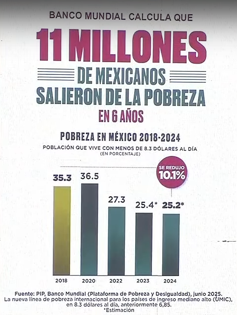

Publicaciones Recientes
Deuda Pública de México: Análisis por Sexenio
Actualizado el: 04 de octubre de 2025
¿Sabías que la deuda pública de México creció un 850% desde 2006, alcanzando $17.88 billones en 2025? El Saldo Histórico de los Requerimientos Financieros del Sector Público (SHRFSP) permite analizar la evolución de esta deuda a través de los diferentes sexenios presidenciales.
La siguiente tabla presenta datos comparativos que muestran no sólo el monto absoluto de la deuda, sino también su peso relativo en la economía nacional (como porcentaje del PIB) y la contribución específica de cada administración al endeudamiento total del país. Se incluye además el contexto de las principales crisis económicas internacionales que han influido en estas cifras.
| Fecha de Corte | Presidente | Saldo Millones de pesos % del PIB |
Aportación a la Deuda por Administración* % del Total de la deuda |
Crisis Internacionales |
|---|---|---|---|---|
| 30 Nov 2006 | Fox y Anteriores | $1,878,114** [1] ND % del PIB |
$1.88 Billones 10.51% |
Crisis de las Punto Com (2001) Los USA estuvieron 8 meses en recesión económica |
| 30 Nov 2012 | Calderón | $5,890,846** [2] ND % del PIB |
$4.01 Billones 22.45% |
Gran Recesión (2008) Los USA estuvieron 19 meses en recesión económica |
| 30 nov 2018 | Peña | $10,480,700 [3] ND % del PIB |
$4.59 Billones 25.67% |
|
| 30 sep 2024 | AMLO | $16,732,790 [4] 49.30%*** [4] |
$6.25 Billones 34.97% |
Pandemia Covid-19 (2020) Los USA estuvieron 3 meses en recesión económica |
| 31 ago 2025 | Sheinbaum (En 11 meses de gobierno) |
$17,877,768 [5] 49.50%*** [5] |
$1.14 Billones 6.40% |
* Calculado como la diferencia entre el saldo al final del sexenio y el saldo al final del sexenio anterior.
** Las cifras para los sexenios de Fox y Anteriores, y Calderón corresponden al Saldo de la Deuda del Sector Público Federal. El Saldo Histórico de los Requerimientos Financieros del Sector Público (SHRFSP) fue consolidado como el indicador más amplio y representativo de
la deuda pública en años posteriores, a partir del sexenio de Enrique Peña Nieto.
*** Porcentaje estimado. Las cifras de deuda como % del PIB para fechas intermedias (que no son de cierre anual) se basan en estimaciones del PIB publicadas por la SHCP, ya que el dato consolidado y definitivo del PIB solo se conoce tiempo después del cierre de cada año.
Nota: "Billón" se refiere a un millón de millones.
ND = No Disponible.

Fuentes:
[1] Información de Finanzas Públicas y Deuda Pública ENERO-NOVIEMBRE DE 2006.
[2] Información de Finanzas Públicas y Deuda Pública ENERO-NOVIEMBRE DE 2012.
[3] Comunicado No. 017 Las finanzas públicas y la deuda pública a noviembre de 2018.
[4] Información de Finanzas Públicas y Deuda Pública, Enero-Septiembre de 2024.
[5] Comunicado No. 48: Finanzas Públicas y la Deuda Pública a agosto de 2025.
Energéticos en México: Refinación
Actualizado el: 28 de Septiembre de 2025
La refinería de Dos Bocas ha sido un tema central en el debate público sobre la soberanía energética de México. Más allá de los discursos, los datos ofrecen una medida objetiva de su desempeño inicial. La siguiente tabla presenta una comparación mes a mes entre la producción de la refinería y la demanda real de gasolinas en México, permitiendo a cada lector formarse una opinión informada sobre su contribución actual al abasto nacional.
| PERIODO | DOS BOCAS[1] | VENTA GASOLINAS[2] | OBSERVACIONES |
|---|---|---|---|
| Ago 2024 | 10,597 | 802,000 | |
| Sep 2024 | 1,549 | 823,000 | El 29 de julio de 2024, AMLO afirmó que para septiembre de 2024 alcanzaría a producir 340,000 barriles diarios de combustibles. El total de combustibles (no sólo gasolinas) fue de 13,496 barriles diarios. |
| Oct 2024 | 9,804 | 736,000 | |
| Nov 2024 | 1,582 | 800,000 | |
| Dic 2024 | 13,044 | 775,000 | |
| Ene 2025 | 6,521 | 742,000 | |
| Feb 2025 | 748 | 725,000 | |
| Mar 2025 | 3,958 | 741,000 | |
| Abr 2025 | 41,988 | 808,000 | |
| May 2025 | 43,392 | 762,000 | |
| Jun 2025 | 78,553 | N/D | Este mes alcanzó el record de producción que representa el 10.18% del promedio total de las ventas de gasolinas. |
| Jul 2025 | 57,275 | N/D | |
| Ago 2025 | 41,356 | N/D | El 1 de septiembre de 2025 en el Primer Informe de Gobierno, Sheinbaum afirmó que la Refinería Olmeca ya estaba operando al 100% |
| PROMEDIO | 23,874 | 771,400 | En promedio, Dos Bocas ha cubierto el 3.09% del promedio total de gasolinas que se consumen en el país. |
[1]Elaboración de productos petrolíferos por refinería (BDI PEMEX)
[2]https://estadisticashidrocarburos.energia.gob.mx/gas.aspx#
Inflación en México: Comparativa por Sexenio
Actualizado el: 31 de Agosto de 2025
La inflación es uno de los indicadores económicos más relevantes para medir el aumento generalizado y sostenido de los precios de bienes y servicios en México. En términos simples, refleja cómo el poder adquisitivo de la moneda se reduce con el tiempo. Analizar su comportamiento por sexenio permite entender cómo factores internos y crisis internacionales han impactado el poder adquisitivo de la población y la estabilidad económica del país. En esta sección encontrarás una comparativa de la inflación acumulada durante los gobiernos de este siglo, acompañada del contexto de los principales eventos globales que influyeron en cada periodo.
| Presidente | Periodo | Inflación Acumulada en el Sexenio[1] | Crisis Internacionales |
|---|---|---|---|
| Fox | Dic 2000 - Nov 2006 | 29.03% | Crisis de las Punto Com (2001) Los USA estuvieron 8 meses en recesión económica |
| Calderón | Dic 2006 - Nov 2012 | 28.22% | Gran Recesión (2008) Los USA estuvieron 19 meses en recesión económica |
| Peña | Dic 2012 - Nov 2018 | 26.98% | |
| AMLO | Dic 2018 - Sep 2024 | 32.09% | Pandemia Covid-19 (2020) Los USA estuvieron 3 meses en recesión económica |
| Sheinbaum (Parcial: 10 meses de gobierno) |
Oct 2024 - Jul 2025 | 2.89% |
[1]Calculadora Inflación INEGI https://www.inegi.org.mx/app/indicesdeprecios/CalculadoraInflacion.aspx
Indicadores de Pobreza Multidimensional por Sexenio
Actualizado el: 17 de agosto de 2025
| Periodo (Presidente) | Porcentaje | Millones de Personas | Promedio de Carencias Sociales[3] |
|---|---|---|---|
| Calderón (2012)[1] | 45.5% | 53.3 | 2.4 |
| Peña Nieto (2018)[2] | 41.9% | 51.9 | 2.3 |
| AMLO (2024)[2] | 29.6% | 38.5 | 2.5 |
[1] CONEVAL, Informe de Pobreza en México 2012.
[2] INEGI, Comunicado de Prensa 118/25: Medición de Pobreza Multidimensional 2024.
[3] Las 6 Carencias Sociales medidas son:
- Rezago Educativo
- Acceso a Servicios de Salud
- Acceso a la Seguridad Social
- Calidad y Espacios de la Vivienda
- Servicios Básicos en la Vivienda
- Acceso a la Alimentación Nutritiva y de Calidad
Análisis: Un Éxito Cuantitativo con un Retroceso Estructural
Las cifras del INEGI para el cierre del sexenio 2018-2024 muestran un éxito cuantitativo innegable: 13.4 millones de personas dejaron la condición de pobreza multidimensional, principalmente por la mejora en sus ingresos. Sin embargo, este logro esconde un alarmante retroceso en la estructura misma de la pobreza.
El promedio de carencias sociales para quienes permanecen en la pobreza se incrementó a 2.5. Este indicador no solo revierte la mejora lograda en el sexenio anterior (2.3 en 2018), sino que representa un retroceso de más de una década, siendo una cifra peor que la registrada al final del sexenio de Calderón en 2012 (2.4).
Esto sugiere que, si bien las políticas de transferencias monetarias lograron rescatar a la población con menos desventajas, el "núcleo duro" de la pobreza se quedó atrás y su situación se agravó. En 2024, ser pobre en México significa, en promedio, enfrentar una mayor acumulación de carencias que en cualquier momento de los dos sexenios anteriores. Se redujo el número de pobres, pero la condición de serlo es ahora más precaria.
Análisis: El Desacoplamiento entre el Tipo de Cambio y la Inflación
Actualizado el: 09 de Julio de 2025
El siguiente gráfico ilustra una divergencia notable que comenzó alrededor de 2021: mientras la inflación acumulada (línea morada) mantenía su tendencia alcista, el tipo de cambio promedio (línea verde) comenzó a apreciarse, un fenómeno que se conoció popularmente como el "Super Peso".
Este desacoplamiento no es inédito. Se observó un patrón similar entre 2009 y 2013, un periodo que también mostró un peso relativamente fuerte frente a una inflación creciente. Como muestra la gráfica, aquel periodo fue seguido por una importante "corrección" o depreciación del peso, que alcanzó casi el 50% en los años siguientes. La historia sugiere que las divergencias prolongadas entre estos dos indicadores tienden a resolverse eventualmente, a menudo con ajustes abruptos en el tipo de cambio.
Esta distorsión del tipo de cambio también generó una percepción engañosa del crecimiento económico. Entre 2022 y 2023, medios y figuras políticas celebraron que México se había convertido en la "economía número 12 del mundo" basándose en el PIB nominal medido en dólares. Sin embargo, este aparente ascenso fue un espejismo causado por la fortaleza artificial del peso. Una métrica más fiable, el PIB por Paridad de Poder de Compra (PPC), que ajusta las diferencias en el costo de vida y anula las distorsiones cambiarias, mostró que México no mejoró su posición en el ranking mundial durante ese mismo periodo. El FMI y el Banco Mundial utilizan el PPC precisamente para realizar comparaciones internacionales más justas.
Si bien un tipo de cambio fuerte puede beneficiar temporalmente a los consumidores de bienes importados, presenta riesgos significativos para la economía en general. Un "dólar barato" reduce la competitividad de las exportaciones mexicanas, encarece el turismo extranjero en el país y disminuye el valor en pesos de las remesas que reciben millones de familias. Por el contrario, una moneda excesivamente débil erosiona el poder adquisitivo. El ideal no es un tipo de cambio artificialmente "barato" o "caro", sino uno estable y competitivo que refleje los fundamentales económicos del país.

Empleo y Salario Mínimo en México por Sexenio
Actualizado el: 5 de julio de 2025
El empleo y el salario mínimo son indicadores clave del bienestar económico y social. Esta sección presenta una comparación por sexenio de los salarios mínimos diarios y la evolución de los puestos de trabajo afiliados al IMSS. Particularmente, los datos más recientes indican una contracción en el mercado laboral formal, con una caída sostenida en el número de empleos registrados desde abril de 2025. Los datos completos permiten observar el impacto de las políticas laborales en distintos periodos presidenciales.
| Presidente | Salario Mínimo General | Aumento Sexenal vs Anterior | Salario Mínimo Frontera Norte | Aumento Sexenal vs Anterior | Variación Empleo IMSS[3] |
|---|---|---|---|---|---|
| Fox (Sexenio completo) |
$47.05 | 33.96% | No aplicaba[4] | No aplicaba[4] | +12.41% |
| Calderón (Sexenio completo) |
$60.50 | 33.74% | No aplicaba[4] | No aplicaba[4] | +19.13% |
| Peña (Sexenio completo) |
$88.36 | 46.05% | $88.36 | No aplicaba[4] | +27.37% |
| AMLO (Sexenio completo) |
$248.93 | 181.72% | $374.89 | 324.28% | +11.96% |
| Sheinbaum (1 oct 2024 - 30 jun 2025)[5] |
$278.80 | 12.00% | $419.88 | 12.00% | -0.69% |
|
[1] BANXICO |
|||||
Energéticos en México: Producción de PEMEX
Actualizado el: 27 de Junio de 2025
La producción de energéticos en México es una historia de drásticos altibajos, pero el volumen de barriles extraídos cuenta solo la mitad de la historia. El verdadero impacto en las finanzas del país reside en la compleja interacción entre la producción, los precios globales y los ingresos generados. La siguiente tabla desglosa estos tres factores por sexenio, revelando paradojas sorprendentes y desafiando muchas de las percepciones comunes sobre las épocas de "bonanza" y "crisis" petrolera en México.
| Presidente | Barriles de Petróleo Diarios Promedio[1] | Barriles de Condensados Diarios Promedio[1] | Total Promedio Diario Barriles de Hidrocarburos Líquidos[1] | Precio Promedio Sexenal Barril Petróleo (USD)[2] | Ingreso Promedio Diario por Hidrocarburos Líquidos (USD)[3] |
|---|---|---|---|---|---|
| Fox | 3,275,446 | Volúmenes menores que se incluían en la cifra de crudo | 3,275,446 | $31.64 | $103,635,111.44 |
| Calderón | 2,697,030 | Volúmenes menores que se incluían en la cifra de crudo | 2,697,030 | $79.27 | $213,793,568.10 |
| Peña | 2,200,894 | 20,350 A partir de Ene 2018 | 2,204,003 | $63.18 | $139,248,909.54 |
| AMLO | 1,641,484 | 125,685 | 1,767,169 | $64.28 | $113,593,623.32 |
| Sheinbaum (Oct 2024 - May 2025) | 1,378,679 | 261,010 | 1,639,689 | $64.43 | $105,645,162.27 |
[1] Producción de hidrocarburos líquidos por región y activo
[2] Precio de la Mezcla Mexicana de Petróleo
[3] El ingreso promedio diario se calcula multiplicando el Total de Hidrocarburos Líquidos por el Precio Promedio Sexenal del barril de petróleo. Cantidades no actualizadas por inflación.
NOTA: Los ingresos aquí estimados no incluyen costos de extracción ni de exportación. Se presentan únicamente con fines ilustrativos.
Puntos para la Reflexión
- Al comparar los sexenios de Fox y AMLO, ¿qué factor tuvo un mayor impacto en el ingreso diario promedio: el volumen de producción o el precio del barril?
- El sexenio de Calderón coincidió con la Gran Recesión de 2008. Observando la tabla, ¿qué elemento explica que los ingresos petroleros de México alcanzaran su máximo histórico precisamente en ese periodo?
- Observando el ingreso del gobierno actual, ¿qué desafío fiscal implica tener una entrada de recursos similar a la de hace dos décadas, pero con compromisos de gasto social (como las Ayudas del Bienestar) mucho mayores y elevados a rango constitucional?
Análisis: Sheinbaum presume reducción de pobreza, pero Banco Mundial proyecta estancamiento
Actualizado el: 12 de Junio de 2025
El 6 de junio de 2025, la presidente Claudia Sheinbaum presentó una gráfica destacando una reducción de 11 millones de personas en situación de pobreza entre 2018 y 2024. Las cifras provienen de la Plataforma de Pobreza y Desigualdad (PIP) del Banco Mundial, pero es crucial entender su naturaleza: los datos hasta 2022 se basan en las Encuestas Nacionales de Ingresos y Gastos de los Hogares (ENIGH), mientras que los de 2023 y 2024 son estimaciones (nowcasts).
Fuente:https://pip.worldbank.org/nowcasts
Si bien estas estimaciones confirman la reducción que presume el gobierno, también revelan una tendencia preocupante. Según las proyecciones más recientes del Banco Mundial, la pobreza en México se estancará e incluso podría aumentar ligeramente. Se estima que el número de personas pobres aumentará (a pesar de los programas sociales) 670,705 entre 2023 y 2025.

En este gráfico de la PIP se muestran las cifras hasta 2022 que se basan en las ENIGH:
Fuente: Calculadora de Pobreza – PIP
La tendencia a la baja en la pobreza ha sido constante desde 1996 como se puede observar según los datos que presenta la PIP. En la siguiente tabla se calcula la variación en puntos porcentuales intersexenal:
| Periodo | Presidente | (+) Aumento / (-) Reducción[1] |
|---|---|---|
| 1989 - 2018 | Salinas - Peña (Periodo Neoliberal) | -24.82% |
| 2000 - 2006 | Fox | -9.13% |
| 2006 - 2012 | Calderón | -1.87% |
| 2012 - 2018 | Peña Nieto | -8.74% |
| 2018 - 2022 | AMLO (parcial) | -7.94% |
Los gobiernos obradoristas suelen presentar la reducción de la pobreza como un logro excepcional, cuando en realidad ha sido una constante en la mayoría de los gobiernos mexicanos desde el inicio del periodo neoliberal.
Sheinbaum señaló que la reducción de 11 millones de personas representa una baja del 10.10%, donde ya se incluyen los años 2023 y 2024. Aunque es cierto que el gobierno de AMLO logró reducir la pobreza más que sus predecesores, la diferencia no es muy grande, pero ha sido impulsada principalmente por programas sociales financiados con deuda pública, más que por crecimiento económico, al tener el sexenio de AMLO el menor crecimiento del PIB de este siglo (ver sección del PIB de esta página).
¿Cuánto se ha pagado de FOBAPROA con los Impuestos de los Contribuyentes?
Publicado el: 1 de junio de 2025
A continuación se presenta un resumen del monto destinado al pago de la deuda relacionada con el FOBAPROA, desde su conversión en deuda pública en 1999 hasta diciembre de 2024. Se muestran los valores en pesos corrientes y dos métodos de actualización para dimensionar el impacto real en términos actuales.
| Concepto | 1999 - Dic 2024 Cantidades Sin Actualizar[1] | Cantidades Actualizadas a Dic 2024 (Método 1) | Cantidades Actualizadas a Dic 2024 (Método 2) | Observaciones | |
|---|---|---|---|---|---|
| Deuda Inicial | $687,844 | $687,844 | $2'228,367 | En Método 1 no se actualiza la deuda inicial; en Método 2 sí. | |
| + | Intereses Generados | $1'523,239 | $2'513,321 | $972,798 | Método 2 excluye la parte que corresponde a la actualización de la deuda inicial. |
| - | Cuotas Bancarias | $287,554 | $425,967 | $425,967 | Aportaciones de instituciones financieras. |
| - | Recuperaciones | $102,284 | $185,429 | $185,429 | Estimación debido a falta de fechas precisas. |
| - | Disminución Nuevo Programa | $104,770 | $188,938 | $188,938 | Estimación debido a falta de fechas precisas. |
| - | Rendimientos de Inversiones | $59,377 | $107,078 | $107,078 | Estimación debido a falta de fechas precisas. |
| - | Impuestos destinados al pago del FOBAPROA - Ramo 34 | $640,468 | $1,155,807 | $1,155,807 | Exclusivamente estos pagos, son pagos efectuados directamente con recursos presupuestarios provenientes de los impuestos. |
| = | Saldo por Pagar | $1'016,630 | $1,137,946 [2] | $1,137,946 [2] |
Cantidades en millones de pesos
Consideraciones:
- El total pagado con recursos del Gobierno Federal al cierre de 2024 se estima en $1.16 billones de pesos actualizados, provenientes del presupuesto público a través del Ramo 34.
- Además de estos pagos, el IPAB ha utilizado otras fuentes de financiamiento, como las cuotas bancarias y rendimientos de inversiones, para cubrir parte del servicio de la deuda.
- Algunas publicaciones, como por ejemplo: El Fobaproa ha costado más de $2 billones y todavía se debe otro, han reportado que todo lo que se ha pagado son intereses, cuando en realidad se ha pagado parte de la Deuda Inicial, Intereses y sus respectivas actualizaciones, y es importante distinguir que no todo se ha pagado con recursos del erario.
Nota Informativa
Entre 1999 y diciembre de 2024, el monto total pagado por el gobierno federal con recursos presupuestarios para cubrir obligaciones relacionadas con el FOBAPROA (ahora administradas por el IPAB) asciende a aproximadamente $1.16 billones de pesos actualizados a diciembre de 2024.
Para dimensionar esta cifra, puede compararse con otros compromisos financieros relevantes del Estado, como el incremento reciente en la deuda pública federal. Por ejemplo, durante los primeros 6 meses de la actual administración (2024–2025), la deuda pública (SHRFSP) aumentó en casi $1 billón de pesos, de acuerdo con datos de la Secretaría de Hacienda.
[1]Informe IPAB Seguro de Depósitos Bancarios de México 2024.
[2]Información de Finanzas Públicas y Deuda Pública, Enero - Diciembre de 2024
Déficits Fiscales en México: Comparativa por Sexenio
Explore el promedio de déficits fiscales en México por administración presidencial, basado en datos oficiales de fuentes como BANXICO y SHCP. Esta sección presenta un análisis claro de los déficits anuales promedio, junto con el contexto de crisis internacionales que impactaron cada periodo.
| PRESIDENTE | AÑOS BASE DEL CÁLCULO[2] | DÉFICIT ANUAL PROMEDIO | CRISIS INTERNACIONALES |
|---|---|---|---|
| Fox | 2001 [1], 2002, 2003, 2004, 2005, 2006 | 2.21% | Crisis de las Punto Com (2001) Los USA estuvieron 8 meses en recesión económica |
| Calderón | 2007, 2008, 2009, 2010, 2011, 2012 | 2.67% | Gran Recesión (2008) Los USA estuvieron 19 meses en recesión económica |
| Peña | 2013, 2014, 2015, 2016, 2017, 2018 | 2.90% | |
| AMLO | 2019, 2020, 2021, 2022, 2023, 2024 | 4.07% | Pandemia Covid-19 (2020) Los USA estuvieron 3 meses en recesión económica |
[1]Informe Anual 2001 Banco de Mexico
[2]Comunicados de Prensa SHCP
Crecimiento del PIB en México por Sexenio
El Producto Interno Bruto (PIB) es uno de los principales indicadores del desempeño económico de un país. En esta sección se presenta el crecimiento del PIB de México desglosado por sexenio presidencial, con énfasis en los contextos internacionales que influyeron en cada periodo. Además, se incluye el ranking de México en la economía mundial según el Fondo Monetario Internacional, tanto a precios actuales como en términos de paridad del poder adquisitivo.
| PERIODO | Ultimo mes año inicio - Ultimo mes año terminación[1] | CRECIMIENTO PIB[2] | CRISIS INTERNACIONALES |
|---|---|---|---|
| Fox | Dic 2000 - Dic 2006 | 11.38% | Crisis de las Punto Com (2001) Los USA estuvieron 8 meses en recesión económica |
| Calderón | Dic 2006 - Dic 2012) | 8.57% | Gran Recesión (2008) Los USA estuvieron 19 meses en recesión económica |
| Peña | Dic 2012 - Dic 2018 | 12.25% | |
| AMLO | Dic 2018 - Dic 2024 | 5.22% | Pandemia Covid-19 (2020) Los USA estuvieron 3 meses en recesión económica |
[1]El PIB se reporta por años completos.
[2]Cálculo realizado con base en cifras del "Sistema de Cuentas Nacionales de México. Producto Interno Bruto Trimestral. Año Base 2018" emitido por el INEGI. Metodología: (PIB Anual del último año del sexenio) entre (PIB Anual del último año del sexenio anterior) = Resultado - 1
| AÑO | PRECIOS ACTUALES[1] | PROMEDIO ANUAL TIPO DE CAMBIO USD[2] | PURCHASING POWER PARITY[3] |
|---|---|---|---|
| 2000 | 9 | $9.46 | 11 |
| 2001 | 8 | $9.34 | 11 |
| 2002 | 8 | $9.67 | 11 |
| 2003 | 10 | $10.79 | 11 |
| 2004 | 11 | $11.29 | 11 |
| 2005 | 11 | $10.89 | 11 |
| 2006 | 13 | $10.90 | 11 |
| 2007 | 14 | $10.93 | 11 |
| 2008 | 13 | $11.14 | 11 |
| 2009 | 15 | $13.50 | 11 |
| 2010 | 15 | $12.63 | 11 |
| 2011 | 15 | $12.43 | 11 |
| 2012 | 15 | $13.17 | 11 |
| 2013 | 15 | $12.77 | 12 |
| 2014 | 15 | $13.30 | 12 |
| 2015 | 14 | $15.88 | 12 |
| 2016 | 15 | $18.69 | 12 |
| 2017 | 15 | $18.91 | 12 |
| 2018 | 15 | $19.24 | 12 |
| 2019 | 15 | $19.26 | 12 |
| 2020 | 15 | $21.50 | 13 |
| 2021 | 15 | $20.28 | 13 |
| 2022 | 14 | $20.12 | 13 |
| 2023 | 13 | $17.73 | 13 |
| 2024 | 13 | $18.33 | 13 |
| Ene 2025 - May 2025 | 15 | $20.14 | 13 |
[1]https://www.imf.org/external/datamapper/NGDPD@WEO/OEMDC/ADVEC/WEOWORLD
[2]BANXICO
[3]https://www.imf.org/external/datamapper/PPPGDP@WEO/OEMDC/ADVEC/WEOWORLD
Inversión Extranjera Directa (IED) en México por Sexenio
La IED representa un indicador clave del atractivo y competitividad de México en el contexto económico global. Este flujo de capital no solo impulsa el crecimiento económico, sino que también refleja la confianza internacional en las políticas y estabilidad del país.
Los datos presentados a continuación muestran la participación promedio de México en la captación de IED mundial durante cada sexenio presidencial. Esta perspectiva comparativa permite evaluar el desempeño relativo del país frente a la competencia internacional por estos recursos, considerando además el impacto de las principales crisis económicas que han marcado cada período.
| PERIODO | PORCENTAJE PROMEDIO[1] | CRISIS INTERNACIONALES |
|---|---|---|
| Fox | 2.27% | Crisis de las Punto Com (2001) Los USA estuvieron 8 meses en recesión económica |
| Calderón | 1.17% | Gran Recesión (2008) Los USA estuvieron 19 meses en recesión económica |
| Peña | 1.90% | |
| AMLO (2019 - 2023)[2] | 2.30% | Pandemia Covid-19 (2020) Los USA estuvieron 3 meses en recesión económica |
[1]Banco Mundial
[2]No han sido publicados los datos del 2024.
Pobreza en México: Evolución por Sexenio según CONEVAL y HDI
Descubre la evolución de la pobreza en México a través de datos oficiales de CONEVAL y el Índice de Desarrollo Humano (HDI). Esta sección analiza las tendencias en pobreza multidimensional, carencias sociales y cambios en el ranking HDI por administración presidencial, contextualizando los impactos de crisis internacionales.
| Presidente | Posición último año sexenio anterior (52=Mejor, 76=Peor) | Posición último año sexenio (52=Mejor, 81=Peor) | Posiciones (+)Ganadas (-)Perdidas | Crisis Internacionales |
|---|---|---|---|---|
| Fox | 54 [2] | 52 [3] Posición de 2005 porque en 2006 no se elaboró el Ranking | +2 | Crisis de las Punto Com (2001) Los USA estuvieron 8 meses en recesión económica |
| Calderón | 52 [3] Posición de 2005 porque en 2006 no se elaboró el Ranking | 61 [4] | -9 | Gran Recesión (2008) Los USA estuvieron 19 meses en recesión económica |
| Peña | 61 [4] | 76 [5] | -15 | |
| AMLO | 76 [5] | 81 [6] Posición del Ranking 2023, todavía no emiten el Ranking 2024 | -5 | Pandemia Covid-19 (2020) Los USA estuvieron 3 meses en recesión económica |
[1]El Indice de Desarrollo Humano (HDI) mide: Expectativa de vida al nacer, Expectativa de escolaridad, Media de escolaridad e Ingreso Nacional Bruto per Cápita.
[2]HDR 2002
[3]HDR 2007/8
[4]HDR 2013
[5]HDR 2019
[6]HDR 2025
Consultas, quejas, aclaraciones: eramirezr@ymail.com